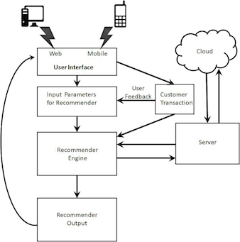

COMP 20: Web Programming
Fall 2018 Semester Group Project
Overview
You will be working on a team of no more than 5 people maximum to create a prototype pertaining to audio and/or video. Please note that a prototype is different than a product: a product is a complete system with documentation while a prototype simulates most of the complete system. I do not expect a full-blown product to be completed by the end of the semester.
Unacceptable Project Ideas
- A blog
- A message board
- Find the nearest [fill-in-the-blank]
- Something that deals with real money directly especially in testing
- Something that requires multiple users (e.g., "social networking")
Absolute Requirements
Your team's project must adhere to the following non-negotiable requirements:
- Must use HTML5.
- Must use JavaScript.
- The team must use Git revision control for the project. Each team will be provided a private repo in GitHub under the
tuftsdev organization.
- Must have desktop and mobile web user interfaces. That is, the user interface is different on the desktop than on mobile.
- Must use a server-side framework or technology (e.g., Node.js, Django, Ruby on Rails, Sinatra, Flask).
- Must use at least 1 third-party API (e.g., Twilio, Twitter, Dropbox, YouTube, Spotify).
- Project must be deployed and hosted remotely (e.g., Heroku, GitHub, Amazon AWS, Google Cloud Platform, DigialOcean)
Deliverables
- Project proposal and design doc (15 points; due on Wednesday, October 24th). In Markdown format, in a
README.md file in your team's GitHub repository, using bullet-points:
- Project title
- Problem statement (i.e., what is the problem?)
- How do you solve the problem?
- List of all the features that your team will implement. Your team will be held accountable for the features you list!
- What data will your prototype be using and collecting
- Any algorithms or special techniques that will be necessary
- Electronic mockups of what your team will be developing using wireframes. No hand-drawn mockups accepted. Tools to create wireframes include Balsamiq (commercial; de facto standard), Gliffy, MockFlow, and even Microsoft PowerPoint.
- If your team incorporates hardware into the project, a high-level system engineering diagram will be ideal. A high-level system engineering diagram contains all the components of the system (e.g., router, sensors, boards, other hardware), how the components connect to other components, and inputs and outputs (including data). Wireframes should still be used for system engineering digram. Example:  . Wireframes of front-end web interfaces are still required.
- Project checkup (10 points; due on Friday, November 2nd) - I will be looking for evidence in your team's private GitHub repository that your team started working on the project. It does not have to be elaborate.
- Status report 1 (5 points; due on Friday, November 9th) - This file must be in your team's private GitHub repository, written in either text or Markdown format, that outlines (1) what was accomplished during the week, (2) challenges and issues team faced during the week, and (3) your goals for the next week.
- Status report 2 (5 points; due on Friday, November 16th) - Please do not overwrite your status report from the week before.
- Status report 3 (5 points; due on Friday, November 30th) - Ditto.
- The completed project (40 points; ABSOLUTE DEADLINE on Tuesday, December 11th at noon)
- Elevator pitch presentation at Semester Group Project Demo Day (10 points; on Tuesday, December 11th at noon at Sophia Gordon Hall) - You have less than 5 minutes to explain your project to me and to the judges!
The remaining 10 points of the project (out of 100 total points) will be for individual performance on the team based on your teammates' feedback. That is, underperforming members of a team can receive a lower grade for the final project.
Example Project Proposal
Here is one from spring 2013 from Tyler Lubeck, former head TA of the course (fall 2014). Overall, it is a good proposal but not an excellent proposal: Tyler even made a note of this in the document! The team did not list the features of the project: "Emails/SMS" was listed but emails and SMSes for what? A features is what a user can do; a simple example is "user search for song." The proposal also did not briefly describe the purpose of each API.
Intellectual Property
All works and ideas are owned by the members of the team. I cannot take ownership of any of your work. I do not have stake or equity in any project created in my classes for that matter.
Important Notes
- Your team is allowed to change direction or scope of the project but your team will need to submit a new project proposal / design doc and no time extension will be given.
- A note on privacy and data collection: the less personal information you collect, the better. Enough said.
- Do not do anything with payments. Lots of trouble if you get it wrong (and chances are, you will).
Assessment
Your team will be graded on five factors:
- Functionality - Something that works consistently. Remember, a project with fewer features that work is significantly better than one with numerous features, in which some either do not work or are buggy.
- Utility - Does your project fulfill a recognized need? Is it also easy to understand?
- Originality - C'mon, another running app or calorie counter? Better if your team strives to do something more cosmic.
- Technical Competency - Use good programming practices, consistent Git commits and pushes, meaningful Git commit messages used. Egregious data collecting will be penalized.
- Teamwork - Does all team members contribute? Having one or two people doing all the work is not good.
Here is the rubric form that will be used on Semester Group Project Demo Day: semester_group_project_rubric.pdf
After the completion of the semester group project, you will evaluate your teammates via 360 degree performance evaluation. Each member of a team will receive the same grade for the semester group project. However in some cases, your participation grade may increase or decrease depending on the evaluations from your other teammates. Your review will not be read by your other teammates.
Semester Group Project Demo Day
The room (51 Winthrop Street) will have a number of tables. Two teams can share a table to showcase their work. I will go to each table and each team shall give me a 5 minutes-or-under demo. Others can walk around and look at other team's work. The atmosphere will be like a fair. There will be people outside of this class in attendance, including professors and even trustees of the University. Please feel free to invite your friends and family to attend. In the past, students have brought their parents to this event. Remember, it should not be a stressful day --it is a day to have fun!
Frequently Asked Questions
Q: "Does the deliverable have to be purely software? Could a team also have a physical product or an IoT device which communicates with the web application? I think using an IoT device could open up some dank possibilities as I'm more of a hardware/ software system type of programmer"
A: The deliverable does NOT have to be purely software but it must require some software, namely web software. This would be fantastic! Dank possibilities indeed. I concede one thing we don't do a good job with in Computer Science (this applies to anywhere, not just Tufts) is having projects that integrate hardware and software, and alas most CS students walk out knowing is how to build apps. Many of the best opportunities out there these days integrate both hardware and software, and knowing only one piece but not the other will do you disservice.
Q: The guidelines say strictly no "social networking" projects. I had a good idea of an app for finding study partners, is this an example of social networking project? I'm expecting you will veto this idea as it will definitely require a user base with some type of profile/communication system.
A: This is a good example of a social networking project that requires more than 1 person to do something. This is also a very saturated idea as it has been done a number of times in the past by teams in Web Programming or in Mobile Development. The problem is right there: "as it will definitely require a user base with some type of profile/communication system."
Q: Can we use stuff other than MongoDB or Node.js (e.g., PHP + MySQL) for semester group project?
A: Yes, of course!
Q: How important is it for us to be able to host our application remotely? Just asking in case we are not able to host it correctly, but have the application working locally.
A: This is now a requirement for the semester group project.
Teams
Team 1
- Dirie, Samsam
- Goss, Andrew
- Hadeshian, Miko
- Udoyi, Kingsley
- Urheim, Margo